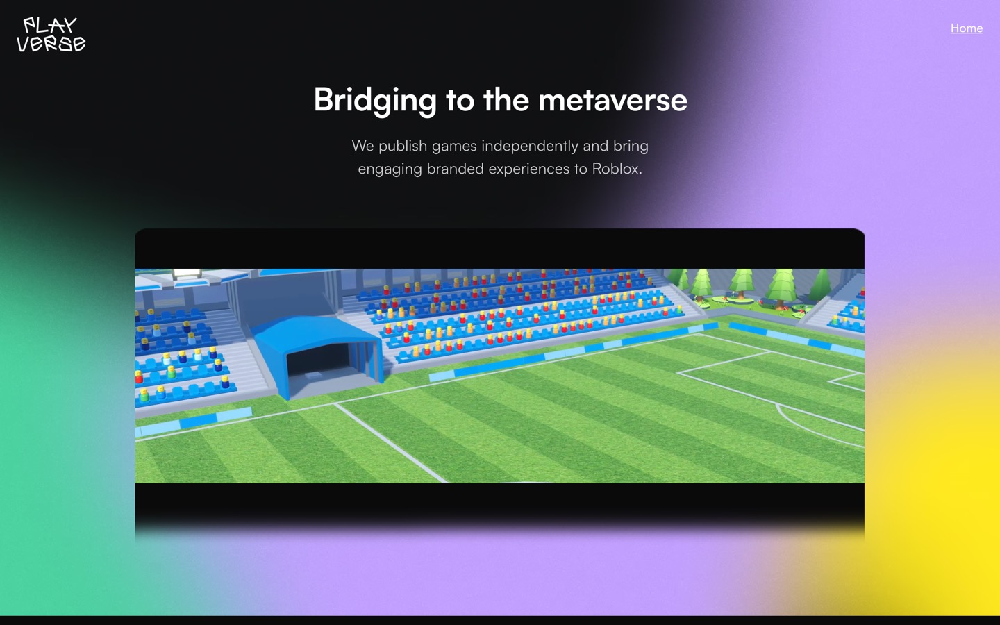

Work · Case study
Project-managing a FIFA-licensed game with 1.5 billion visits.
Super League Soccer launched on Roblox in January 2023 and became FIFA Super Soccer after an official licensing partnership with FIFA. I am its project manager: the team, the calendar, the brand, the social channels and the partners, about twelve hours a week.

The game
A 4v4 football game played in a packed stadium: be the goalkeeper, run the midfield, or score the bicycle kick. It was the most successful sports launch in Roblox history, with a peak of 40,000 live players, and it has kept growing since.
The numbers are public. As of September 2026 the experience has more than 1.5 billion visits, over a million favourites and a verified publishing group, Play! Football, with 1.9 million members. For the FIFA Club World Cup 2025 the studio brought twelve licensed clubs, including Manchester City and Borussia Dortmund, into the game.
The job
A game at this scale is a business with a schedule. Developers, artists and moderators need to know what ships when. Players need to hear about it in the right order. FIFA and the clubs need what they were promised. My job is to hold all of that together.
I run the priorities and the calendar, keep the brand consistent across the game and its channels, and handle the relationships with partners, including the licensed branding the game carries.
What that involves
- Coordinating a distributed team across time zones: what is being built, who is blocked, and what gets cut when a date slips.
- Owning the brand and social presence. I grew the studio’s X account, @PlayverseStudio, to 130,000 followers.
- Managing partnerships and licensed branding, where the standard for getting things right is set by someone else.
- Community: a group of nearly two million people is a public space, and moderation, rules and tone are management decisions.
What I learned
Players join for the game and stay for each other. Most of the job is making the community somewhere worth staying: clear rules, a consistent presence, and people who feel seen.
I also learned what it means to be accountable to a brand that is not mine. That discipline is why I plan to study business and management.
Screens
